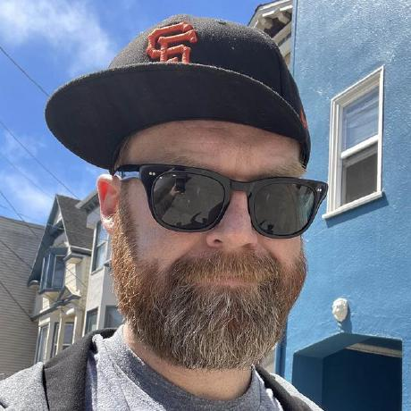

Mathew Fleisch
Senior Infrastructure & DevOps Engineer from San Francisco
Infrastructure and DevOps engineer dedicated to building scalable abstractions, standardizing environments, and streamlining CI/CD pipelines at scale. I specialize in creating robust developer tooling and believe that solid testing and automation are the foundation for delivering secure, high-performance software.
View ResumeExperience
Senior Infrastructure Engineer @ Workday (PIE Team)
2023 - PresentBuilding scalable abstractions and standardized infrastructure for the Platform Infrastructure Engineering team.
- Created a custom MCP server for the team's infrastructure state, improving visibility and enabling AI-driven insights into complex deployments.
- Developed an abstraction layer for Amazon EKS using Terraform and Cookiecutter to standardize configuration and environment setup.
- Engineered cloud-native CI/CD pipelines using Tekton and Argo Workflows for infrastructure and custom API deployments across multiple Kubernetes clusters.
- Created SOC-compliant release and change management automation processes.
Senior Infrastructure Engineer @ Workday (Scylla Team)
2021 - 2023Maintained an automated platform for deploying the Workday stack on multi-cloud Kubernetes clusters.
- Managed custom Kubernetes operators for provisioning cloud resources like storage and databases.
- Built cloud-agnostic end-to-end test suites to validate microservice functionality at scale.
- Sysdig — Senior Infrastructure Engineer 2020 - 2021
- Eaze — Senior Infrastructure Engineer 2018 - 2020
- Apple — Full Stack Developer (Marketing / Finance) 2015 - 2018
- Hitachi America — JavaScript Developer 2017
- UBM — Back-End Developer 2011 - 2015
- Buck Institute for Research on Aging — Staff Programmer 2009 - 2012
During my tenure at the Buck Institute, I co-authored research papers on bioinformatics and aging:
Skills
Cloud & Orchestration
CI / CD & Tooling
Languages
Open Source
BashBot
An extensible Slack bot written in Go for executing bash commands via RTM. Used for ChatOps and triggering infrastructure workflows.
AGIMUS
Standardized a monolithic Python Discord bot into an extensible library. Features a MySQL backend, CI/CD via GitHub Actions and KinD tests.
Creative Works
Where engineering meets art. Original music paired with cinematic timelapses.
Latest: 2026.01.01 Bay Bridge Rainbow
View more on my YouTube Channel.